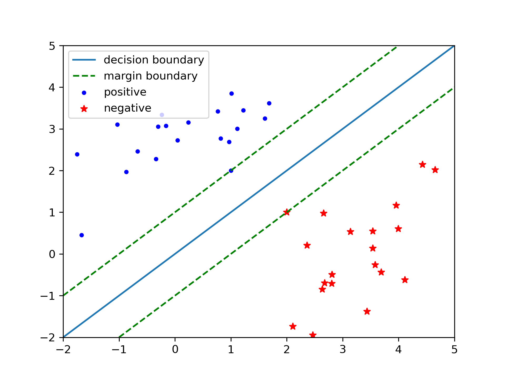

Linear SVM
Contents
Linear SVM#
Note
The intuition behind Support Vector Machine(SVM) is to separate positive&negative samples by large margins.
Margin#
Suppose we have a binary classification problem with \(x \in \mathbb{R}^{d}, y \in \{-1, 1\}\). Try to solve this by linear classifier \(h(x) = w^{T}x + b\), if \(h(x) >= 0\) predict 1, else -1. Intuitively, in addition to correctly separate the data, we want to separate the data by large margins.
{kind=link}
Geometric margin of the classifier:
We want to maximize geometic margin:
Without loss of generality, set \(\gamma\left \| w \right \|=1\), then the above is equivalent to:
Dual Problem#
We can write the constraints as:
The generalized Lagrangian of the above optimal problem:
Primal problem:
The KKT condition:
\(\frac{1}{2}\left \| w \right \|^{2}\) is convex.
\(g_{i}\)’s are convex.
the constraints \(g_{i}\)’s are strictly feasible.
is satisfied in the separable case, so the primal problem is equivalent to the dual problem:
Minimize \(\nabla_{w}L(w, b, \alpha)\):
Plug back to Lagrangian:
Dual problem:
Non-separable Case#
For non-separable case, we add the soft term \(\xi\), thus transform the optimization:
Lagrangian:
Dual problem of the non-separable case:
Examples#
from sklearn.datasets import make_classification
X, y = make_classification(n_features=4, random_state=0)
"""preprocessing + svm"""
from sklearn.svm import LinearSVC
from sklearn.pipeline import make_pipeline
from sklearn.preprocessing import StandardScaler
clf = make_pipeline(StandardScaler(), LinearSVC(random_state=0, tol=1e-5))
clf.fit(X, y)
Pipeline(steps=[('standardscaler', StandardScaler()),
('linearsvc', LinearSVC(random_state=0, tol=1e-05))])
clf.named_steps['linearsvc'].coef_
array([[0.14144316, 0.52678399, 0.67978685, 0.49307524]])
clf.predict([[0, 0, 0, 0]])
array([1])
SMO algorithm#
We can not directly use coordinate ascent in SVM:
If we want to update some \(\alpha_{i}\), we must update at least two of them simutaneously, coordinate ascent change to:
select some pair \(\alpha_{i}, \alpha_{j}\).
optimize with respect to \(\alpha_{i}, \alpha_{j}\) while holding other \(\alpha_{k}\) fixed.
We can easily change step-2 into a quatratic optimization problem.
Remaining the choice of \(\alpha_{i},\alpha_{j}\) , in fact this step is heuristic.